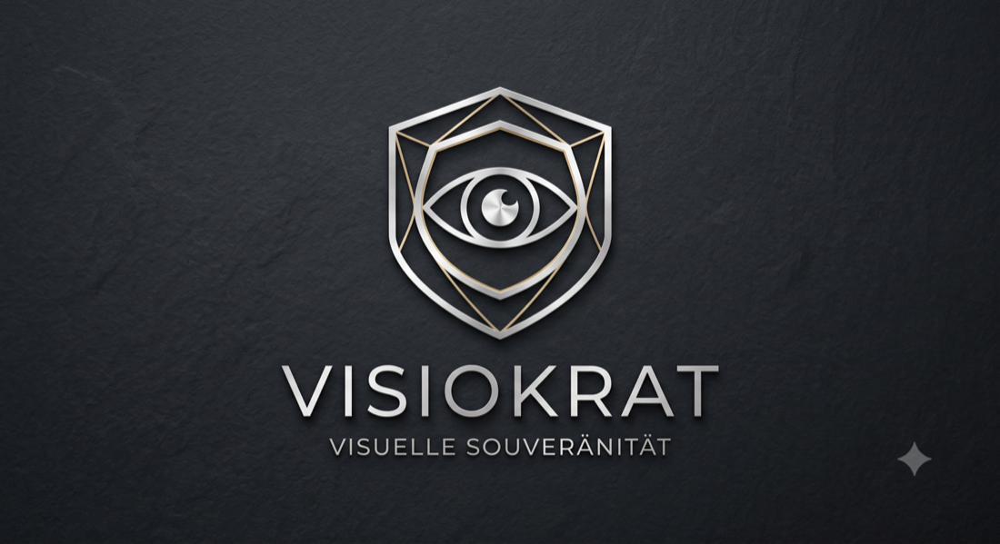
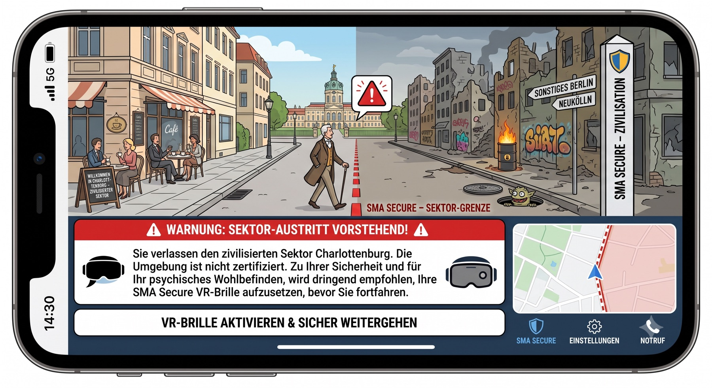
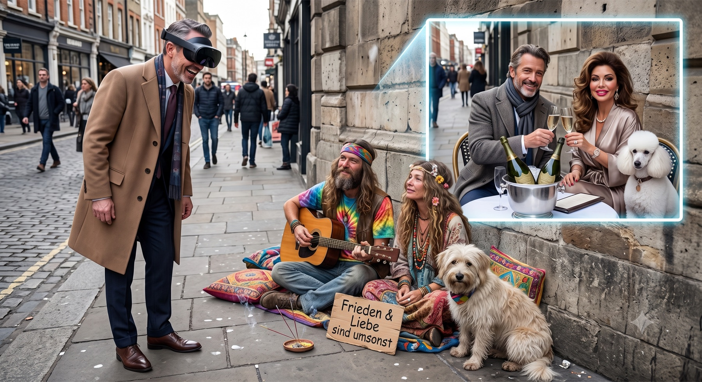
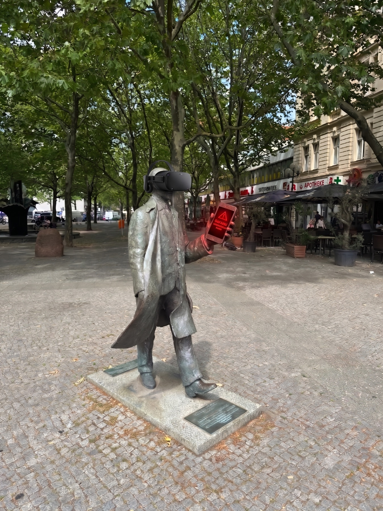
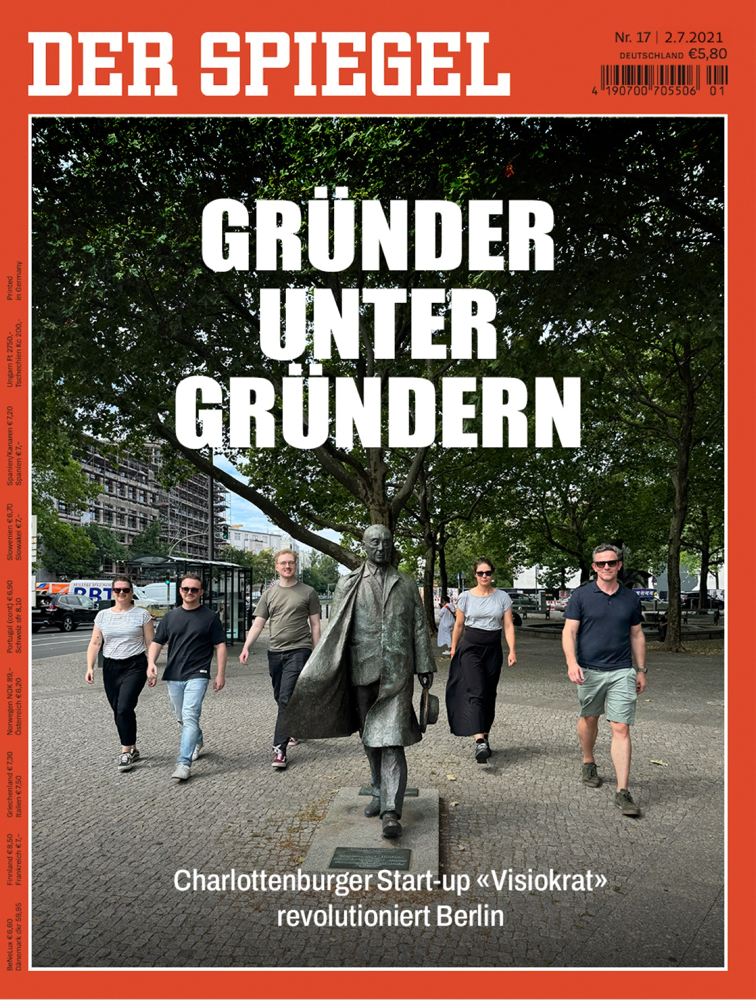
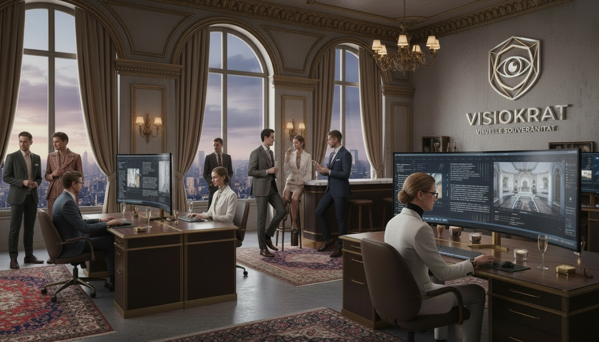

Falsche Fassaden
Nachkriegsbauten und Plattenbauten erzeugen kognitiven Stress. Visiokrat blendet sie aus und ersetzt sie durch Gründerzeit mit Stuck.

VisiokratVisuelle Souveränität
Die Welt außerhalb des Ku'damms ist schlicht unzumutbar. Visiokrat verwandelt per AR-Brille jede fremde Straße in vertraute Charlottenburger Ästhetik — diskret, exklusiv, alternativlos.
„Wir machen die Welt schön, um Menschen ein Gefühl von Zuhause und Geborgenheit zu geben.“
Wir filtern die Zumutungen des Alltags und übersetzen urbane Dissonanzen in nahtlose ästhetische Harmonie — denn Ihr Blick auf die Welt sollte genauso exklusiv sein wie Ihr Platz in ihr.
Welche Probleme wir lösen
Nachkriegsbauten und Plattenbauten erzeugen kognitiven Stress. Visiokrat blendet sie aus und ersetzt sie durch Gründerzeit mit Stuck.
Hippies mit Mate-Flasche, Döner-Imbisse und laute Märkte wirken fremd. Die Brille transformiert die Szenerie in Flaneure mit Bordeauxglas.
Das Verlassen des Kiezes ist emotional belastend. Visiokrat gibt das Gefühl von Zuhause — egal, wo Sie gerade stehen.
Das Produkt



Für wen
Wohlsituierte Charlottenburger ab 45 Jahren, die ihren Kiez als Nabel der Welt betrachten — und gelegentlich gezwungen sind, ihn zu verlassen.
Erlösmodell
Monatliche Subscription für App & AR-Software. „Das ehrlichste Erlösmodell der Startup-Geschichte: Leute vergessen zu kündigen.“
AR-Brillen mit gesundem Aufschlag — zum Kauf oder zur Miete, im Bundle mit der Software.
Gucci, Hermès & Co. kaufen sich in die Simulation ein: virtuell gekleidete Passanten, Ambient Storefronts.
Presse
Das Charlottenburger Start-up Visiokrat revolutioniert Berlin. Ein Blick, der keine Kompromisse macht.
— DER SPIEGEL, Nr. 17

Das Team

Sichern Sie sich frühen Zugang zur ersten AR-Plattform für visuelle Souveränität.